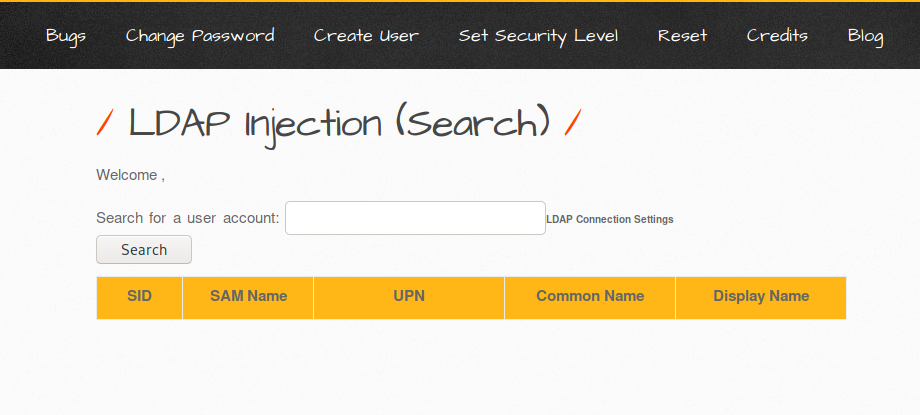
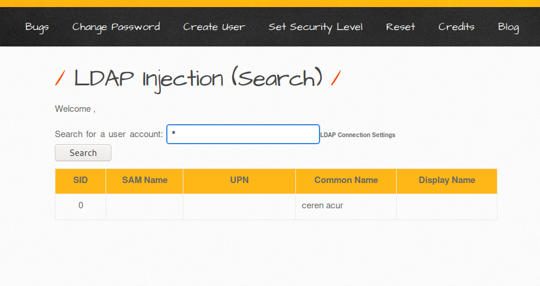

LDAP İNJECTİON
LDAP NEDİR ?
LDAP özgün bir veritabanı yönetim sistemidir. Normal veritabanı yönetim sistemlerinden farklı olarak okuma işlemi için özelleştirilmiştir.
LDAP İNJECTİON NEDİR ?
LDAP enjeksiyonu, kullanıcı tarafından kontrol edilebilen veriler, uygulama tarafından gerçekleştirilen bir LDAP sorgusuna güvenli olmayan bir şekilde kopyalandığında ortaya çıkar.Bir saldırgan sorguya LDAP meta karakterleri ekleyebilirse, sorgunun mantığına müdahale edebilir.Sorgunun kullanıldığı işleve bağlı olarak, saldırgan, yetkilendirilmemiş hassas verileri alabilir veya bazı yetkisiz eylemleri gerçekleştirmek için uygulamanın mantığını tersine çevirebilir.
LDAP enjeksiyon saldırıları, SQL enjeksiyon saldırılarına benzer, bu nedenle bir sonraki fikir, LDAP sorguları oluşturmak için kullanıcılar tarafından sunulan parametreleri kullanmaktır.Güvenli bir web uygulaması, sorguyu oluşturup sunucuya göndermeden önce kullanıcı tarafından iletilen parametreleri temizlemelidir.Savunmasız bir ortamda, bu parametreler düzgün bir şekilde filtrelenmez, bu nedenle bir saldırgan rastgele kötü amaçlı kod enjekte edebilir.
LDAP İNJECTİON SEARCH ZAAFİYETİ UYGULAMASI
1.aşama:Öncelikle phpldapadmin ile ilgili kurulumlar yapıldı ve bir test ortamında denemek için tablolar eklendi.Bu tablolara erişmek için aşağıdaki search girişinde kod enjekte ederek zaafiyet yardımıyla kullanıcıları bilgileri ele geçirebilir.

2.aşama: Bu aşamada veritabanında bulunan kullanıcı adına kısa yoldan ulaşmak için * işareti kullanılabilir bu şekilde enjeksiyon gerçekleşir ve veritabanı kullanıcılarına erişilebilmektedir.

3.aşama: Bu aşamada search zaafiyetini değerlendirmek için öncelikle *)(&işaretini kullanıp kullanıcı tablolarına erişim sağlanır admin yetkisine sahip olunabilmektedir.Aşağıdaki görselde bu enjeksiyon gerçekleştirilmiştir bunu yapmak için çeşitli sorgularda kullanılabilir.
4.aşama Sonuç: Kullanıcı tablolarına erişim sağlandı böylece ilerki aşamada yetki yükseltmek için enjeksiyon gerçekleştirilebilir.